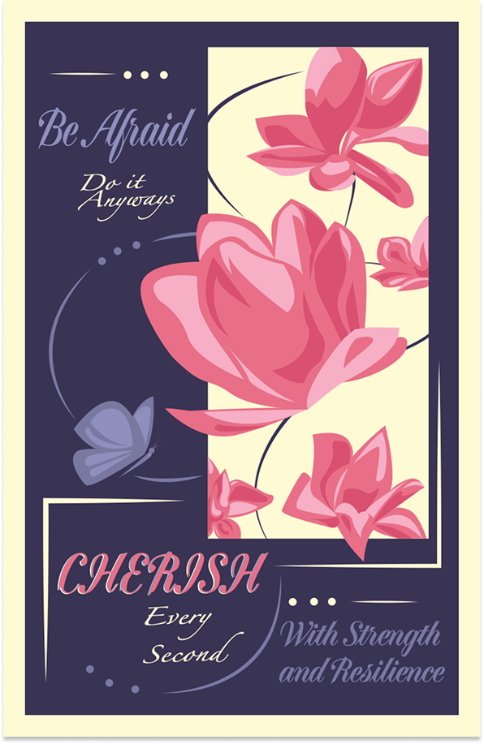
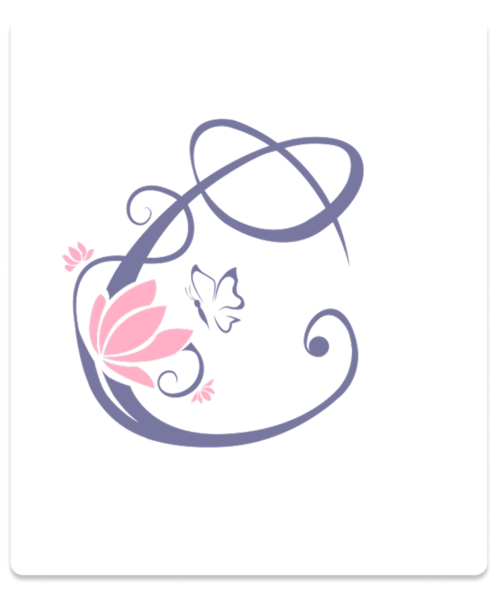
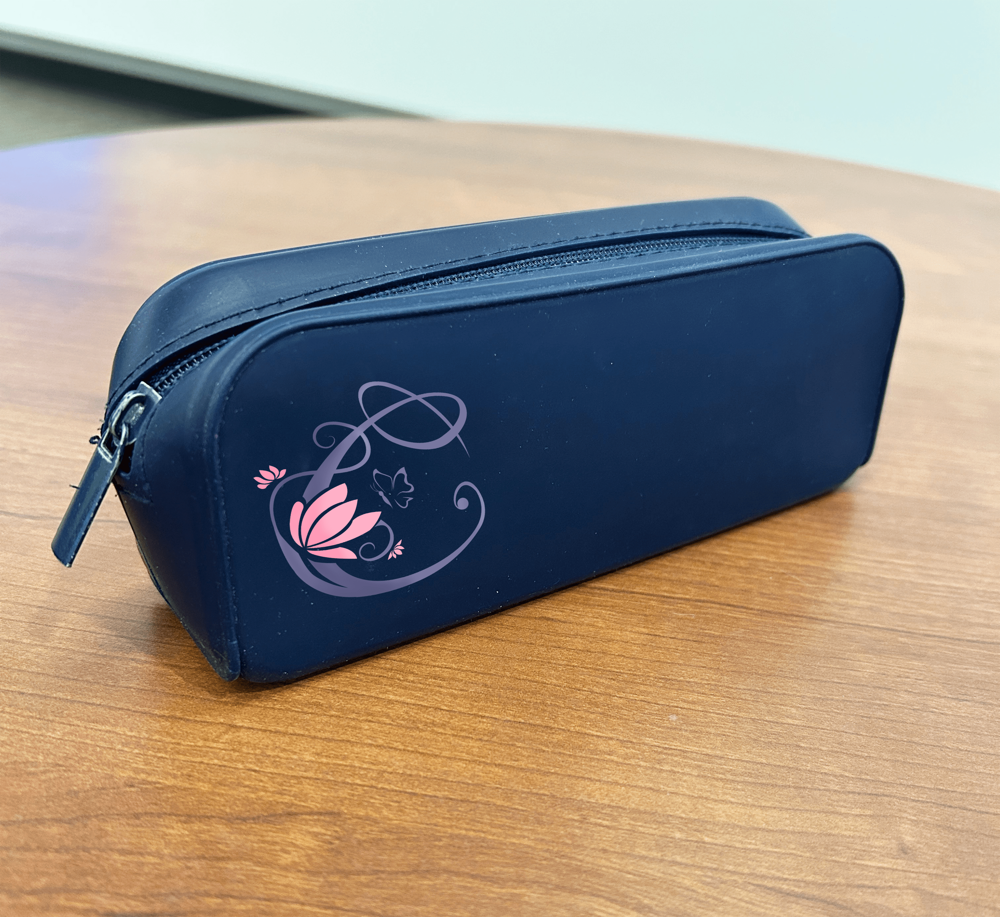

Exploring Identity through Design


This poster and logo set were created as part of an assignment where I designed a brand based on a personal statement that was given to me by a client. The client shared their story of moving accross Canada for their education; I used quotes from their brief which talked about their journey towards finding resilience. The poster features a lotus as its central image due to the fact that lotuses thrive in difficult environments.
Mockups



 sandysri0711@gmail.com
sandysri0711@gmail.com
 www.linkedin.com/in/sandy-srinivasan
www.linkedin.com/in/sandy-srinivasan